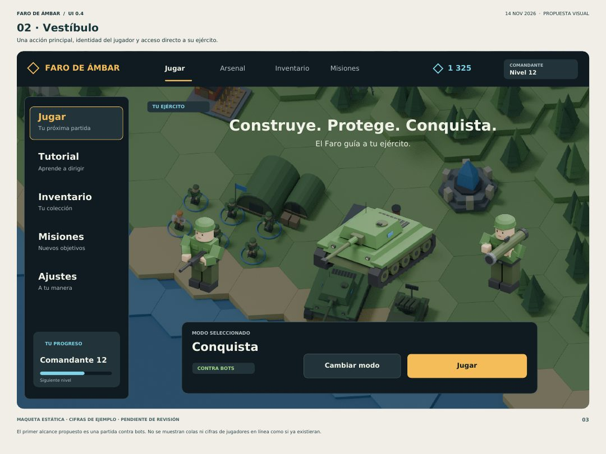
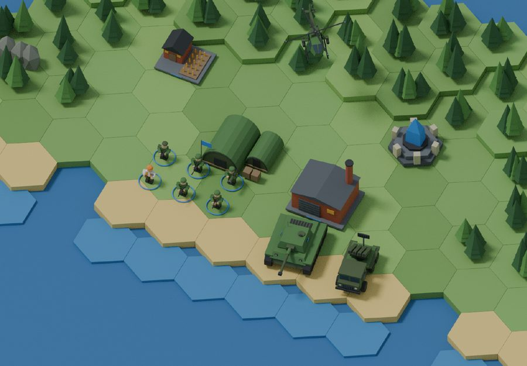
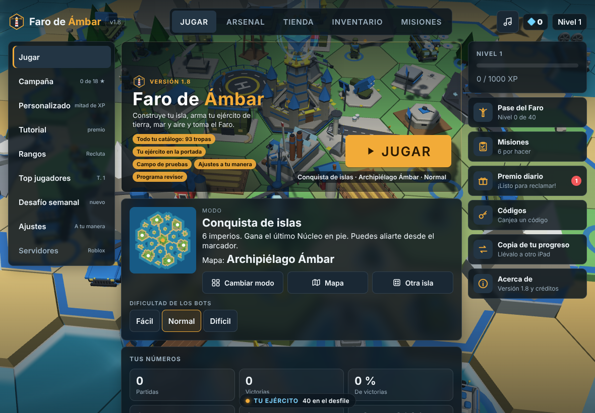
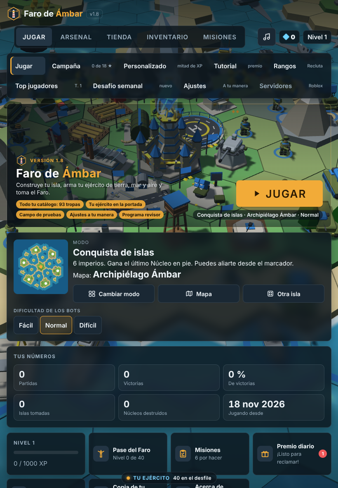
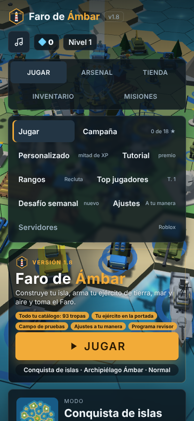

PRD del prototipo web · versión 1.8
Revisé otra vez tus archivos: el catálogo de tu PRD 1.8 (secciones 37 a 54: 78 tropas y 32 edificios), tu PDF «Equipamiento militar 2» (texto y las 19 imágenes de sus 15 páginas), tu Dirección visual UI 0.4 (14 pantallas y 2 vehículos) y las imágenes de modelos de tu PDF v1.8 (31 modelos 0.2 y 2 escenas). Tienes razón: en la v1.7 solo entró un primer lote. El juego publicado tiene 36 tropas y 23 edificios, y la documentación no traía tus imágenes.
«La imagen de la portada»: en el sitio se ve una escena armada con la base y todo el ejército; en el juego, el vestíbulo tiene un fondo plano. Tu pantalla 02 de la UI 0.4 pide justo eso: «Tu ejército» detrás del vestíbulo. Eso se arregla en esta versión.


Resultado real del programa revisor antes de esta versión (juego v1.7) y sobre el juego terminado. «En el juego» = existe, con modelo 3D, tu nombre y tu productor; cómo funciona cada uno en una partida lo dicen las pruebas de la sección 9.
Informe del 2026-11-20 16:18 sobre el juego v1.8 publicado (93 tropas, 42 edificios, 156 modelos 3D). «En el juego» = existe, con modelo, tu nombre y tu productor.
| Grupo de tu catálogo | Lo que falta hoy |
|---|
Una tropa por cada fila de tu catálogo que falta, más las de tu lista de equipamiento que no tenían lugar (Equipo antitanque, Ametrallador pesado, Soldado antidrones, Perro robot, Lanzacohetes termobárico, Avión artillado y Submarino estratégico). Los números son una propuesta para probar: tú decides el balance. Precio en monedas y energía (⚡); velocidad en casillas por segundo.
| Tropa | Sale de | Precio | Vida · vel. · pobl. | Arma | Lo especial |
|---|---|---|---|---|---|
| Explorador PRD 1.8 · 38 | Cuartel | 250 | 140 · 2,0 · 1 | 8 · 0,8 s · 3 · bala | Ve 6 casillas y captura Banderas y el Faro un 50 % más rápido. Modelo: Soldado ligero con gorra, prismáticos y mochila chica. |
| Soldado PRD 1.8 · 38 y Equipamiento (soldado) | Cuartel | 300 | 220 · 1,5 · 1 | 13 · 0,7 s · 3 · bala | Combatiente básico y barato. Modelo: Soldado de bloques con casco y rifle compacto. |
| Oficial de campo PRD 1.8 · 39 | Cuartel | 1.200 | 260 · 1,5 · 1 | 10 · 0,8 s · 3 · bala | Mando: las tropas propias a 2 casillas hacen un 15 % más de daño (no se suma con otro Oficial ni con un Vehículo de mando). Modelo: Uniforme con gorra de mando y tableta con el color del equipo. |
| Operador de comunicaciones PRD 1.8 · 39 | Cuartel | 900 | 200 · 1,5 · 1 | 8 · 0,8 s · 3 · bala | Ve 8 casillas y descubre submarinos, minas y unidades ocultas cerca. Modelo: Mochila de radio grande con antena y auriculares. |
| Zapador PRD 1.8 · 39 y Equipamiento (MICLIC) | Cuartel | 800 | 300 · 1,5 · 1 | 60 · 2,5 s · 1 · cargas (×3 a edificios, ×4 a muros) | Cargas explosivas contra muros y edificios; desactiva minas cercanas. Modelo: Casco con visor, equipo de trabajo y cargas a la espalda. |
| Equipo de mortero PRD 1.8 · 39 y Equipamiento (morteros) | Cuartel | 1.100 | 300 · 1,1 · 2 | 70 · 4 s · 6 · granada con daño en área | Tiro curvo de largo alcance con daño en área. Modelo: Dos soldados junto a un mortero sobre base redonda. |
| Paracaidista PRD 1.8 · 39 | Cuartel | 900 | 300 · 1,6 · 1 | 20 · 0,6 s · 3 · bala | Si tienes Aeropuerto militar, sale en paracaídas sobre el punto de reunión (si lo ves). Los aviones de transporte lo lanzan donde quieras. Modelo: Soldado con mochila de paracaídas. |
| Infante de marina PRD 1.8 · 39 | Cuartel | 800 | 320 · 1,5 · 1 | 18 · 0,6 s · 3 · bala | Anfibio: camina por el agua poco profunda de la costa. Modelo: Soldado con chaleco ancho y marcas navales. |
| Equipo antitanque Equipamiento (misiles portátiles) | Cuartel | 1.600 | 240 · 1,2 · 1 | 180 · 4 s · 6 · misil guiado (×2 a vehículos) | Misil guiado que cae sobre el techo de los tanques. Modelo: Soldado con lanzador grueso al hombro y mira. |
| Ametrallador pesado Equipamiento (minigun) | Cuartel | 1.000 | 340 · 1,2 · 1 | 9 · 0,12 s · 3 · ráfaga | Ametralladora rotativa: muchísimas balas contra infantería. Modelo: Soldado grande con ametralladora rotativa. |
| Soldado antidrones Equipamiento (rifles antidrones) | Cuartel | 700 | 220 · 1,5 · 1 | 40 · 0,8 s · 4 · inhibidor (×3 a drones) | Corta la señal de los drones: muy fuerte contra drones. Modelo: Soldado con fusil inhibidor de antenas. |
| Tropa | Sale de | Precio | Vida · vel. · pobl. | Arma | Lo especial |
|---|---|---|---|---|---|
| Perro robot Equipamiento (perros robot) | Fábrica | 1.200 + 5 ⚡ | 400 · 2,4 · 1 | — | Patrulla: ve 7 casillas y descubre lo oculto. No pelea. Modelo: Robot de cuatro patas con cámara. |
| Blindado ligero PRD 1.8 · 40 | Fábrica | 1.900 + 10 ⚡ | 1000 · 2,4 · 2 | 30 · 0,6 s · 3 · cañón automático | Rápido y con ruedas. Modelo: Carro de ruedas con torreta baja. |
| Vehículo de combate de infantería PRD 1.8 · 41 | Fábrica | 2.800 + 20 ⚡ | 1700 · 1,8 · 3 | 45 · 0,8 s · 4 · cañón | Lleva 4 soldados y pelea. Modelo: Orugas, torreta chica y portón trasero. |
| Camión de tropas PRD 1.8 · 41 | Fábrica | 1.200 + 5 ⚡ | 700 · 2,2 · 2 | — | Lleva 8 soldados; poca protección. Modelo: Cabina militar y caja cubierta con lona. |
| Ambulancia militar PRD 1.8 · 41 | Fábrica | 1.500 + 10 ⚡ | 800 · 2,2 · 2 | — | Cura a la infantería a 2 casillas (6 % de su vida por segundo). Modelo: Caja cerrada clara con cruz y baliza. |
| Vehículo de recuperación PRD 1.8 · 41 | Fábrica | 2.200 + 15 ⚡ | 1800 · 1,4 · 2 | — | Repara vehículos a 1 casilla (4 % por segundo). Modelo: Chasis pesado con grúa corta. |
| Camión de suministros PRD 1.8 · 41 | Fábrica | 1.600 + 10 ⚡ | 800 · 2,0 · 2 | — | Suministros: las tropas propias a 2 casillas recargan un 20 % más rápido. Modelo: Camión de caja abierta con cajas. |
| Camión cisterna militar PRD 1.8 · 41 | Fábrica | 1.500 + 5 ⚡ | 900 · 2,0 · 2 | — | Combustible: los vehículos propios a 2 casillas van un 20 % más rápido. Modelo: Cabina baja y depósito cilíndrico. |
| Vehículo de mando PRD 1.8 · 42 | Fábrica | 3.000 + 20 ⚡ | 1600 · 1,6 · 3 | 14 · 0,4 s · 3 · ametralladora | Mando: +15 % de daño a las tropas propias a 3 casillas (no se suma con el Oficial). Modelo: Caja alta con dos antenas. |
| Radar móvil PRD 1.8 · 42 | Fábrica | 2.400 + 20 ⚡ | 900 · 1,5 · 2 | — | Ve 10 casillas y descubre aviones furtivos y submarinos. Modelo: Camión con antena plana grande. |
| Obús autopropulsado PRD 1.8 · 42 y Equipamiento (artillería autopropulsada) | Fábrica | 4.600 + 40 ⚡ | 1500 · 0,9 · 3 | 220 · 5 s · 8 · obús con daño en área | Artillería de muy largo alcance. Modelo: Orugas, torreta amplia y cañón largo. |
| Artillería remolcada PRD 1.8 · 42 y Equipamiento (M777) | Fábrica | 2.600 + 10 ⚡ | 800 · 0,7 · 2 | 170 · 5 s · 7 · obús con daño en área | Barata y lenta. Modelo: Cañón sobre dos ruedas con base abierta. |
| Cazacarros PRD 1.8 · 42 | Fábrica | 3.600 + 30 ⚡ | 1900 · 1,4 · 3 | 200 · 2,6 s · 5 · obús (×1,8 a vehículos) | Especialista contra tanques. Modelo: Casco bajo y cañón dominante. |
| Transporte anfibio PRD 1.8 · 43 y Equipamiento (anfibios) | Fábrica | 2.400 + 15 ⚡ | 1500 · 1,8 · 2 | 12 · 0,4 s · 3 · ametralladora | Anfibio: va por tierra y por agua poco profunda; lleva 6 soldados. Modelo: Casco ancho de proa redonda. |
| Vehículo lanzapuentes PRD 1.8 · 43 | Fábrica | 2.600 + 20 ⚡ | 1600 · 1,4 · 2 | — | «Tender puente»: pone un Puente modular en el agua poco profunda de al lado. Modelo: Orugas con dos tramos de puente plegados. |
| Vehículo de despeje PRD 1.8 · 43 | Fábrica | 2.000 + 15 ⚡ | 2000 · 1,3 · 2 | 90 · 2 s · 1 · rodillo (×2,5 a edificios) | Abre paso: rompe muros y obras, y desactiva minas. Modelo: Vehículo pesado con rodillo frontal. |
| Topadora blindada PRD 1.8 · 43 | Fábrica | 1.800 + 10 ⚡ | 2200 · 1,3 · 2 | — | Construye y repara como un Ingeniero, con blindaje. Modelo: Orugas cortas, cabina protegida y pala. |
| Lanzacohetes termobárico Equipamiento (TOS-1A) | Fábrica | 5.200 + 45 ⚡ | 1300 · 1,0 · 3 | 60 · 10 s · 5 · salva de 8 con daño en área | Nube de fuego en un área: muy fuerte contra infantería. Modelo: Orugas con caja de 24 tubos. |
| Tropa | Sale de | Precio | Vida · vel. · pobl. | Arma | Lo especial |
|---|---|---|---|---|---|
| Dron explorador PRD 1.8 · 44 | Helipuerto | 800 + 5 ⚡ | 150 · 3,2 · 1 | — | Ve 8 casillas desde el aire. Modelo: Cuadricóptero chico con cámara. |
| Dron de carga PRD 1.8 · 44 | Centro de drones | 1.200 + 10 ⚡ | 250 · 2,6 · 1 | — | Suministros desde el aire: +20 % de recarga a las tropas a 2 casillas. Modelo: Cuatro rotores y caja colgante. |
| Dron interceptor PRD 1.8 · 44 | Centro de drones | 1.400 + 10 ⚡ | 300 · 3,6 · 1 | 60 · 1 s · 3 · solo aire (×2 a drones) | Caza drones y helicópteros. Modelo: Ala en flecha y cuerpo chico. |
| Tropa | Sale de | Precio | Vida · vel. · pobl. | Arma | Lo especial |
|---|---|---|---|---|---|
| Helicóptero de transporte PRD 1.8 · 45 | Helipuerto | 5.000 + 40 ⚡ | 2000 · 2,4 · 3 | — | Lleva 8 soldados y los baja en cualquier tierra. Modelo: Fuselaje ancho, puerta lateral y dos rotores. |
| Helicóptero de rescate PRD 1.8 · 45 | Helipuerto | 4.000 + 30 ⚡ | 1600 · 2,5 · 3 | — | Cura a la infantería y repara aeronaves a 2 casillas. Modelo: Cabina redonda, patines y cruz. |
| Helicóptero de patrulla naval PRD 1.8 · 45 y Equipamiento (Seahawk) | Helipuerto | 6.000 + 50 ⚡ | 2000 · 2,3 · 4 | 200 · 4 s · 3 · torpedo (×2 a submarinos) | Descubre submarinos y los ataca con torpedos. Modelo: Cuerpo medio con cúpula de sonar. |
| Tropa | Sale de | Precio | Vida · vel. · pobl. | Arma | Lo especial |
|---|---|---|---|---|---|
| Avión de apoyo terrestre PRD 1.8 · 46 y Equipamiento (A-10) | Aeropuerto militar | 7.000 + 60 ⚡ | 2600 · 2,4 · 4 | 40 · 0,25 s · 3 · cañón de 30 mm (×1,8 a vehículos) | Vuela bajo y destruye tanques. Modelo: Alas rectas anchas y dos motores atrás. |
| Bombardero convencional PRD 1.8 · 46 y Equipamiento (B-52, B-1B) | Aeropuerto militar | 11.000 + 100 ⚡ | 4200 · 1,6 · 6 | 900 · 7 s · 1 · bombas con daño en área | Bombardero pesado: destruye bases. Se ve en el radar. Modelo: Avión grande, alas largas y cuatro motores. |
| Avión de transporte militar PRD 1.8 · 46 y Equipamiento (C-17) | Aeropuerto militar | 6.000 + 50 ⚡ | 3000 · 2,0 · 4 | — | Lleva 10 soldados y los baja en cualquier tierra. Modelo: Fuselaje grande, ala alta y rampa. |
| Avión de vigilancia aérea PRD 1.8 · 46 | Aeropuerto militar | 7.500 + 60 ⚡ | 2200 · 1,8 · 4 | — | Ve 14 casillas y descubre aviones furtivos. Modelo: Avión con disco grande encima. |
| Avión de reabastecimiento PRD 1.8 · 46 | Aeropuerto militar | 6.500 + 50 ⚡ | 2600 · 2,0 · 4 | — | Repara aeronaves propias a 3 casillas (3 % por segundo). Modelo: Fuselaje largo con pértiga trasera. |
| Avión de apoyo electrónico PRD 1.8 · 46 y Equipamiento (HARM) | Aeropuerto militar | 8.000 + 70 ⚡ | 2400 · 2,2 · 4 | 300 · 8 s · 6 · misil antirradar (×2 a defensas) | Interferencia: las defensas enemigas a 4 casillas disparan un 40 % más lento. Modelo: Avión mediano con antenas. |
| Avión artillado Equipamiento (AC-130) | Aeropuerto militar | 9.500 + 80 ⚡ | 3800 · 1,4 · 5 | 120 · 1,5 s · 5 · obús lateral con daño en área | Da vueltas sobre el blanco y dispara de costado. Modelo: Avión de carga con cañones al costado. |
| Tropa | Sale de | Precio | Vida · vel. · pobl. | Arma | Lo especial |
|---|---|---|---|---|---|
| Dron naval de superficie PRD 1.8 · 44 | Puerto | 1.000 + 5 ⚡ | 400 · 3,0 · 1 | — | Explora el mar: ve 7 casillas y descubre submarinos y minas. Modelo: Casco bajo de dos flotadores y mástil. |
| Dron submarino PRD 1.8 · 44 | Puerto | 1.200 + 5 ⚡ | 300 · 2,0 · 1 | — | Va oculto bajo el agua y descubre submarinos y minas. Modelo: Cápsula pequeña con aletas. |
| Cañonera PRD 1.8 · 47 | Puerto | 2.200 + 15 ⚡ | 1300 · 2,0 · 2 | 90 · 1,8 s · 4 · cañón | Apoyo naval barato contra la costa. Modelo: Casco compacto con cañón al frente. |
| Acorazado PRD 1.8 · 47 | Puerto | 12.000 + 100 ⚡ | 7000 · 0,9 · 6 | 400 · 4 s · 7 · salva de 2 con daño en área | El buque más fuerte contra bases y barcos. Modelo: Casco ancho y tres torres grandes. |
| Patrullera costera PRD 1.8 · 48 | Puerto | 1.600 + 10 ⚡ | 900 · 2,6 · 1 | 16 · 0,5 s · 3 · ametralladora | Vigila la costa: ve 7 casillas y descubre submarinos. Modelo: Casco estrecho y cabina alta. |
| Corbeta PRD 1.8 · 48 y Equipamiento (corbetas, Mk 45, Phalanx) | Puerto | 3.200 + 25 ⚡ | 2000 · 2,0 · 3 | 80 · 1,2 s · 5 · cañón de proa | Defensa de punto: derriba misiles y cohetes cerca. Modelo: Casco corto, puente central y cañón. |
| Crucero de mando PRD 1.8 · 48 y Equipamiento (VLS, Aegis) | Astillero mayor | 9.000 + 80 ⚡ | 5200 · 1,1 · 5 | 260 · 3 s · 7 · misiles de lanzamiento vertical | Mando naval (+15 % de daño a barcos a 3 casillas) y derriba misiles cerca. Modelo: Casco amplio y mástil alto. |
| Buque de desembarco PRD 1.8 · 48 y Equipamiento (buques anfibios) | Astillero mayor | 4.200 + 30 ⚡ | 3200 · 1,4 · 4 | — | Lleva 12 plazas (soldados y vehículos) y los baja en la costa. Modelo: Casco ancho y rampa frontal grande. |
| Buque logístico PRD 1.8 · 48 | Puerto | 3.500 + 20 ⚡ | 2600 · 1,3 · 3 | — | Repara barcos a 3 casillas (2 % por segundo) y los hace recargar un 20 % más rápido. Modelo: Cubierta con contenedores y grúa. |
| Buque hospital PRD 1.8 · 49 | Astillero mayor | 4.000 + 20 ⚡ | 3000 · 1,2 · 3 | — | Repara barcos y cura a la infantería a 3 casillas. Modelo: Casco blanco con cruz. |
| Aerodeslizador militar PRD 1.8 · 49 y Equipamiento (aerodeslizadores) | Puerto | 2.600 + 20 ⚡ | 1400 · 2,8 · 2 | — | Anfibio: va por agua y tierra de la costa; lleva 6 plazas (también vehículos). Modelo: Base con faldón y dos ventiladores. |
| Dragaminas PRD 1.8 · 49 | Puerto | 2.000 + 15 ⚡ | 1400 · 1,8 · 2 | 120 · 1 s · 3 · solo minas | Descubre y destruye minas. Modelo: Casco compacto con brazo trasero. |
| Buque minador PRD 1.8 · 49 y Equipamiento (minas navales) | Puerto | 2.500 + 20 ⚡ | 1500 · 1,6 · 2 | — | «Sembrar mina»: deja una mina oculta (hasta 8). Explota con barcos enemigos. Modelo: Cubierta trasera con módulos. |
| Submarino de reconocimiento PRD 1.8 · 49 | Astillero mayor | 3.000 + 25 ⚡ | 1200 · 1,8 · 2 | — | Oculto: ve 8 casillas y descubre submarinos. Modelo: Casco compacto y vela chica. |
| Tropa | Sale de | Precio | Vida · vel. · pobl. | Arma | Lo especial |
|---|---|---|---|---|---|
| Submarino estratégico Equipamiento (submarinos estratégicos) | Astillero mayor | 24.000 + 100 ⚡ | 2600 · 1,2 · 5 | misil nuclear (un uso) | Solo con «Arsenal estratégico»: un misil, comparte el uso único. Modelo: Casco largo con tapas de misiles. |
Los 16 que faltan de tu catálogo, más dos de tu lista de equipamiento (Defensa de punto y Torre láser). Pestaña nueva «Apoyo» en Construir; el Astillero mayor y el Centro de drones van en «Producción».
| Edificio | Pestaña | Precio | Vida · tiempo · límite | Dónde | Lo que hace |
|---|---|---|---|---|---|
| Corral de ganadería PRD 1.8 · 52 | Economía | 600 | 500 · 7 s · 8 | tierra | +280 monedas/min. Modelo: Cercado con cobertizo y animales. |
| Central de energía PRD 1.8 · 54 | Energía | 3.000 | 1200 · 14 s · 2 | tierra | La energía más fuerte (+25 cada 10 s). Modelo: Módulos industriales y chimeneas con luces. |
| Taller de mantenimiento PRD 1.8 · 53 | Apoyo | 1.800 | 1200 · 10 s · 3 | tierra | Repara vehículos a 2 casillas (30 por segundo). Modelo: Nave baja con portón y grúa. |
| Centro de investigación PRD 1.8 · 53 | Apoyo | 3.000 + 20 ⚡ | 1400 · 14 s · 1 | tierra | 3 investigaciones: Blindaje (+10 % de vida a vehículos), Puntería (+10 % de daño a infantería) y Motores (+15 % de velocidad a aeronaves). Modelo: Laboratorios modulares y torre corta. |
| Estación de radar PRD 1.8 · 53 | Apoyo | 2.000 + 30 ⚡ | 900 · 10 s · 2 | tierra | Ve 12 casillas y descubre furtivos y submarinos a 8. Modelo: Base con antena de plato grande. |
| Centro de drones PRD 1.8 · 53 | Producción | 2.200 + 20 ⚡ | 1100 · 12 s · 2 | tierra | Produce drones y los repara. Modelo: Taller con plataformas y antenas. |
| Astillero mayor PRD 1.8 · 53 | Producción | 4.000 + 30 ⚡ | 2200 · 18 s · 1 | agua junto a la orilla | Produce los buques grandes. Modelo: Dique ancho con grúas. |
| Depósito logístico PRD 1.8 · 53 | Apoyo | 2.500 | 1300 · 12 s · 2 | tierra | Suministros: las tropas a 3 casillas recargan un 20 % más rápido; +5 de energía cada 10 s. Modelo: Almacenes y contenedores. |
| Centro de mando avanzado PRD 1.8 · 53 | Apoyo | 3.500 + 20 ⚡ | 2400 · 16 s · 1 | tierra | Gana territorio (3 casillas) y da +10 % de daño a las tropas a 3 casillas. Modelo: Edificio bajo protegido con mástil. |
| Búnker de guarnición PRD 1.8 · 54 | Defensa | 1.600 | 2000 · 10 s · 6 | tierra | Dispara solo; caben 4 soldados y cada uno suma un 25 % de daño. Modelo: Volumen bajo de hormigón con aberturas. |
| Puerta reforzada PRD 1.8 · 54 | Defensa | 400 | 2500 · 5 s · 10 | tierra | Muro con puerta: abierta deja pasar a tus tropas y aliados; cerrada no pasa nadie. Modelo: Dos pilares y hojas con bandas de color. |
| Puente modular PRD 1.8 · 54 | Apoyo | 800 | 1000 · 8 s · 10 | agua poco profunda junto a tierra | Las tropas de tierra cruzan por encima (los barcos ya no pasan por esa casilla). Modelo: Tablero recto con barandas. |
| Muelle logístico PRD 1.8 · 54 | Apoyo | 1.500 | 1000 · 8 s · 3 | agua junto a la orilla | Repara barcos a 2 casillas (20 por segundo). Modelo: Pasarela ancha con rampa y cajas. |
| Torre de observación PRD 1.8 · 54 | Defensa | 600 | 600 · 6 s · 6 | tierra | Ve 9 casillas y descubre lo oculto a 4. Modelo: Torre alta y estrecha. |
| Batería de defensa costera PRD 1.8 · 54 | Defensa | 3.000 + 20 ⚡ | 1800 · 14 s · 4 | tierra junto al agua | Cañón contra barcos (×1,8) de 7 casillas. Modelo: Base con cañón grande hacia el agua. |
| Complejo estratégico PRD 1.8 · 54 y 55 | Defensa | 15.000 + 100 ⚡ | 3000 · 30 s · 1 | tierra | Solo con «Arsenal estratégico»: lanza el DF-5C (misil nuclear, comparte el uso único). Modelo: Plataforma con compuerta redonda y señal ámbar. |
| Defensa de punto Equipamiento (Phalanx, C-RAM, Cúpula de Hierro) | Defensa | 1.800 + 20 ⚡ | 900 · 10 s · 6 | tierra | Derriba misiles y cohetes a 3 casillas y dispara a drones. Modelo: Torreta con cañón rotativo y radar. |
| Torre láser Equipamiento (HELIOS) | Defensa | 2.500 + 40 ⚡ | 900 · 12 s · 4 | tierra | Rayo contra aeronaves (×2 a drones), 5 casillas. Modelo: Torre con emisor y paneles. |
Cada sistema de tu PDF y su lugar en el juego. 55 entran como tropa, edificio o arma; 2 quedan fuera con su motivo. Las fotos de prensa y las capturas de búsquedas de tu PDF no se copian al proyecto (son de otros sitios): el documento dice qué muestra cada página y qué tropa salió de ella.
| Grupo | Sistema de tu lista | Fuente | En el juego |
|---|---|---|---|
| Aérea | F-35 Lightning II (avión furtivo) | texto «F-35» | Avión de combate furtivo |
| Aérea | B-2 Spirit (bombardero furtivo) | texto «B-2» | Bombardero furtivo |
| Aérea | A-10 Thunderbolt II (ataque a tierra) | texto «A-10» | Avión de apoyo terrestre |
| Aérea | AC-130 Ghostrider (avión artillado) | texto «AC-130» | Avión artillado |
| Aérea | B-1B Lancer (bombardero pesado) | texto «B-1B» | Bombardero convencional |
| Aérea | B-52 Stratofortress (bombardero pesado) | texto «B-52» | Bombardero convencional |
| Aérea | AH-64 Apache (helicóptero de combate) | texto «AH-64» | Apache Guardián |
| Aérea | MH-60R Seahawk (helicóptero naval) | texto «Seahawk» | Helicóptero de patrulla naval |
| Aérea | MQ-9 Reaper (dron) | texto «MQ-9» | Dron de ataque |
| Aérea | Drones kamikaze FPV | texto «FPV» | Dron kamikaze |
| Aérea | Misil aire-aire AIM-120 AMRAAM | texto «AIM-120» | Arma de: Avión de combate furtivo |
| Aérea | Misil antirradar AGM-88 HARM | texto «HARM» | Arma de: Avión de apoyo electrónico |
| Aérea | Bombas guiadas JDAM y Paveway | texto «JDAM» | Arma de: Bombardero convencional |
| Aérea | Bomba antibúnker GBU-57 | texto «GBU-57» | Arma de: Bombardero furtivo |
| Aérea | Aviones de carga gigantes (C-17 Globemaster III) | imagen 18 | Avión de transporte militar |
| Naval | Portaaviones nuclear (USS Gerald R. Ford) | texto «Ford» | Portaaviones |
| Naval | Destructores (lanzamiento vertical VLS y Aegis) | texto «Destructores» | Destructor |
| Naval | Fragatas | texto «Fragatas» | Fragata de escolta |
| Naval | Corbetas | texto «Corbetas» | Corbeta |
| Naval | Interceptor SM-3 (Aegis) | texto «SM-3» | Arma de: Crucero de mando |
| Naval | Submarino de ataque (clase Virginia) | texto «Virginia» | Submarino |
| Naval | Submarino estratégico (clase Ohio, Trident II) | texto «Ohio» | Submarino estratégico |
| Naval | Misil de crucero Tomahawk | texto «Tomahawk» | Arma de: Crucero de mando |
| Naval | Lanchas rápidas misileras (Harpoon, Exocet, NSM) | texto «Lanchas Rápidas Misileras» | Lancha misilera |
| Naval | Buques anfibios de desembarco | texto «Buques Anfibios» | Buque de desembarco |
| Naval | Aerodeslizadores (LCAC) | texto «aerodeslizadores» | Aerodeslizador militar |
| Naval | Cañón naval Mk 45 | texto «Mk 45» | Arma de: Corbeta |
| Naval | Sistema Phalanx CIWS | texto «Phalanx» | Defensa de punto |
| Naval | Minas navales | texto «Minas Navales» | Buque minador |
| Naval | Cañones láser en destructores | imagen 14 | Torre láser |
| Terrestre | Tanque M1A2 Abrams | texto «Abrams» | Tanque pesado |
| Terrestre | Artillería autopropulsada (obuses) | texto «Artillería Autopropulsada» | Obús autopropulsado |
| Terrestre | Obús remolcado M777 | texto «M777» | Artillería remolcada |
| Terrestre | Morteros | texto «Morteros» | Equipo de mortero |
| Terrestre | Lanzacohetes M142 HIMARS | texto «HIMARS» | Lanzacohetes múltiple |
| Terrestre | Misiles ATACMS (submuniciones) | texto «ATACMS» | Arma de: Lanzacohetes múltiple |
| Terrestre | Lanzacohetes termobárico TOS-1A | texto «TOS-1A» | Lanzacohetes termobárico |
| Terrestre | Misil hipersónico DF-17 | texto «DF-17» | Lanzador DF-17 |
| Terrestre | Misil hipersónico Dark Eagle | texto «Dark Eagle» | Lanzador DF-17 |
| Terrestre | Misil balístico intercontinental (ICBM) | texto «ICBM» | Complejo estratégico |
| Terrestre | Escudos THAAD y Patriot | texto «THAAD» | Escudo antimisiles |
| Terrestre | Cúpula de Hierro y C-RAM | texto «C-RAM» | Defensa de punto |
| Terrestre | Misil portátil Javelin | texto «Javelin» | Equipo antitanque |
| Terrestre | Lanzacohetes portátiles AT4, Carl Gustaf y RPG-7 | texto «RPG-7» | Cohetero |
| Terrestre | Rifle Barrett .50 | texto «Barrett» | Cazador |
| Terrestre | Ametralladora rotativa (Minigun) | texto «Minigun» | Ametrallador pesado |
| Terrestre | Carga lineal MICLIC | texto «MICLIC» | Arma de: Zapador |
| Terrestre | Mina Claymore | texto «Claymore» | Fuera Mina antipersonal escondida en tierra: el juego no tiene minas en tierra; el Zapador usa cargas a la vista. |
| Terrestre | Láser HELIOS | texto «HELIOS» | Torre láser |
| Terrestre | Rifles antidrones | texto «Antidrones» | Soldado antidrones |
| Terrestre | Perros robot | texto «Perros Robot» | Perro robot |
| Capturas | Logística e ingeniería (camiones, grúas, ambulancias) | imagen 9 | Camión de suministros |
| Capturas | Equipamiento individual del soldado (visión nocturna) | imagen 16 | Soldado |
| Capturas | Submarinos nucleares (interior y exterior) | imagen 17 | Submarino |
| Capturas | Lanzadores DF-17 en desfile | imagen 8 | Lanzador DF-17 |
| Capturas | Lanzador de misil grande sobre camión (desfile) | imagen 7 | Lanzador nuclear móvil · un misil |
| Capturas | Fuerzas espaciales y satélites militares | imagen 14 | Fuera El juego no tiene espacio ni órbita; la vigilancia de largo alcance la hacen el Avión de vigilancia y la Estación de radar. |
Lo que hace falta programar para que cada tropa nueva haga lo suyo, no solo que exista.
| Sistema | Regla |
|---|---|
| Anfibio | Nuevo tipo de movimiento: tierra y agua poco profunda de la costa (Infante de marina, Transporte anfibio, Aerodeslizador). El agua profunda sigue siendo solo de barcos. |
| Auras | Mando: +15 % de daño a las tropas propias cerca (Oficial 2 casillas, Vehículo de mando 3, Centro de mando 3 con +10 %, Crucero a barcos); no se suman, vale la mayor. Suministros: recarga un 20 % más rápida (Camión de suministros, Dron de carga, Depósito, Buque logístico). Combustible: +20 % de velocidad a vehículos (Camión cisterna). Interferencia: defensas enemigas un 40 % más lentas (Avión de apoyo electrónico). |
| Curar y reparar | Ambulancia y Helicóptero de rescate curan infantería; Vehículo de recuperación y Taller reparan vehículos; Avión de reabastecimiento repara aeronaves; Buque logístico, Buque hospital y Muelle logístico reparan barcos. |
| Detección | Submarinos, minas y el Dron submarino van ocultos: solo se ven (y se les puede disparar) con un detector cerca: Operador de comunicaciones, Radar móvil, Perro robot, Patrullera, Dron naval, Submarino de reconocimiento, Helicóptero naval, Avión de vigilancia, Estación de radar y Torre de observación. |
| Minas navales | El Buque minador siembra hasta 8 minas ocultas; una mina explota con el primer barco enemigo a 1 casilla (500 de daño). El Dragaminas, el Zapador y el Vehículo de despeje las quitan. |
| Transporte aéreo y paracaídas | Helicóptero de transporte (8 plazas) y Avión de transporte (10) suben soldados en su base o en tierra y los bajan en cualquier tierra. El Paracaidista sale del Cuartel; si tienes Aeropuerto militar cae en paracaídas en el punto de reunión que ves. |
| Búnker | Edificio con guarnición: entran hasta 4 soldados; cada uno suma un 25 % al daño del Búnker; si el Búnker cae, salen con la vida que tenían. |
| Puerta y puente | Puerta reforzada: muro que deja pasar a tus tropas y aliados. Puente modular: se pone en agua poco profunda junto a tierra; por ahí cruzan las tropas de tierra (de todos), los barcos ya no pasan por esa casilla; se puede destruir. El Vehículo lanzapuentes lo tiende sin Constructor. |
| Centro de investigación | Tres investigaciones de 2500 monedas y 45 s cada una: Blindaje (+10 % de vida a vehículos), Puntería (+10 % de daño a infantería) y Motores (+15 % de velocidad a aeronaves). |
| Arsenal estratégico ampliado | Con el modificador «Arsenal estratégico»: Lanzador nuclear móvil, Submarino estratégico y Complejo estratégico (silo DF-5C) comparten el mismo uso único por jugador (1/1 → 0/1), con la misma preparación, confirmación y aviso de la v1.7. |
| Defensa de punto y antidrones | Corbeta, Crucero, Fragata de escolta y la Defensa de punto derriban misiles y cohetes que pasan cerca (con espera entre disparos). Soldado antidrones, Dron interceptor y Torre láser hacen más daño a drones. |
| Constructores nuevos | Topadora blindada: construye y repara como un Ingeniero. Vehículo de despeje: rompe muros y obras. |
| Bots | En Normal y Difícil, los bots usan algunas tropas nuevas según su forma de jugar (sin cambiar cuánto gastan). |



Modo nuevo en «Elige un modo»: un mapa tranquilo con todos los productores ya construidos, 500.000 monedas y energía de sobra; los bots no atacan. Sirve para mirar y probar cada tropa y edificio. No cuenta para rangos ni misiones.
Pediste, mientras se hacía esta versión, una zona solo para los creadores que pida contraseña al entrar. En el menú del vestíbulo hay un botón «Creadores»: pide la contraseña que diste y, si es correcta, abre la zona con el modo creador (monedas y energía infinitas, construcción rápida). Se vuelve a pedir cada vez que se abre el juego; después de 5 intentos fallidos hay que esperar 60 s. El juego guarda solo una huella (SHA-256) de la contraseña, no la contraseña. En una página web esto frena a los jugadores, pero no a quien sepa leer el código; en Roblox la contraseña se comprobará en el servidor.
| Archivo | Para qué |
|---|---|
| revisar.py | El programa. «python3 revisar.py» revisa faro.html y escribe salida/informe.html, informe.pdf e informe.json. Opciones: --juego (otra versión), --fotos (miniaturas 3D del juego), --sin-pdf, --estricto (falla si falta algo). |
| plan_v18.py | Tu nombre → clave del juego, el plan de cada tropa y edificio, tu lista de equipamiento y las revisiones de la UI 0.4. |
| datos.cjs | Saca del archivo del juego los datos de tropas, edificios y modelos 3D. |
| fotos.cjs | Abre el juego en Chromium y guarda la miniatura 3D de cada elemento. |
| extraer_refs.py | Saca tus imágenes de modelos de tu PDF v1.8. |
75 modelos nuevos con Blender en el estilo de tus modelos 0.2: bloques, soldados verdes, vehículos verde militar, flota gris, color del equipo en paneles y banderas. Cada uno con sus partes que se mueven (torreta, rotor, hélices). El archivo del juego crece unos 2 MB.
Resultado real de cada prueba, con su evidencia. Las pruebas en Chromium (sin tarjeta gráfica) no sustituyen una prueba en tu iPad: eso lo pruebas tú.
| N.º | Prueba | Estado | Evidencia |
|---|---|---|---|
| O01 | Revisor: tu catálogo completo «python3 faro/tools/revisar/revisar.py --estricto» da 110 de 110 «En el juego»: cada tropa y edificio existe, con su modelo 3D, tu nombre (o uno que empieza igual) y el productor que pusiste. | Aprobada | revisar.py --estricto: salida 0 · 110 de 110 «En el juego» (78 de 78 tropas, 32 de 32 edificios), 110 con modelo 3D · juego v1.8 · 2026-11-20 16:18 |
| O02 | Revisor: equipamiento militar Los 57 sistemas de tu lista quedan en el juego (como tropa, edificio o arma) salvo los 2 «fuera» con motivo escrito (mina Claymore y satélites). | Aprobada | 55 sistemas en el juego (tropa, edificio o arma) + 2 fuera con motivo (Mina Claymore, Fuerzas espaciales y satélites militares) |
| O03 | Revisor: UI 0.4 Las 19 revisiones de tus 14 pantallas dan «En el juego». | Aprobada | 19 de 19 revisiones de tus pantallas |
| O04 | Cada tropa nueva se produce En Campo de pruebas, las 57 tropas nuevas se encargan en su productor, salen al mapa y obedecen una orden de mover (prueba automática, una por una). | Aprobada | 93 de 93 tropas producidas y movidas (nuevas: 57 de 57) |
| O05 | Cada edificio nuevo se construye Los 18 edificios nuevos se colocan en su lugar (tierra, costa o agua poco profunda), se terminan y hacen lo suyo (prueba automática). | Aprobada | 18 de 18 edificios nuevos terminados · corral da monedas: sí · central da energía: sí · centro de drones produce: sí · astillero produce: sí · taller repara vehículos: sí · muelle repara barcos: sí · centro de mando gana territorio: sí |
| O06 | Anfibios Infante de marina, Transporte anfibio y Aerodeslizador cruzan el agua poco profunda; los barcos normales siguen sin pisar tierra y los soldados normales sin pisar agua. | Aprobada | marine en agua baja: sí · marine no en mar profundo: sí · soldado no en agua: sí · barco no en tierra: sí · marine llegó al agua: sí · aerodeslizador subió a la costa: sí |
| O07 | Puente y puerta El Vehículo lanzapuentes tiende un Puente y la infantería cruza a la otra isla; la Puerta reforzada deja pasar a tus tropas y frena a las enemigas. | Aprobada | puente tendido: sí · pagó el puente: sí · tierra cruza: sí · barcos no: sí · soldado sobre el puente: sí · puerta: tuyos pasan: sí · puerta: enemigos no: sí · cerrada: nadie: sí |
| O08 | Auras Oficial o Vehículo de mando: +15 % de daño (no se suman entre ellos); suministros: recarga un 20 % más rápida; combustible: +20 % de velocidad; interferencia: defensas enemigas un 40 % más lentas. Medido en la simulación. | Aprobada | mando +15 % (no se suman): sí · suministros +20 % recarga: sí · combustible +20 % vehículos: sí · daño ×1,15: sí · interferencia −40 %: sí |
| O09 | Detección y minas Un submarino enemigo oculto solo se ve con un detector cerca; una mina se ve con el Dragaminas y explota (500 de daño) cuando pasa un barco enemigo. | Aprobada | submarino oculto sin detector: sí · la Patrullera lo descubre: sí · mina sembrada: sí · el enemigo no ve la mina: sí · mina explota con barco enemigo (500): sí · Dragaminas la quita: sí |
| O10 | Transporte aéreo y paracaídas El Helicóptero de transporte (8) y el Avión de transporte (10) suben soldados y los bajan en cualquier tierra; el Paracaidista cae en el punto de reunión si tienes Aeropuerto. | Aprobada | 8 soldados subieron: sí · bajaron lejos, en tierra: sí · del avión, en paracaídas: sí · Paracaidista cae en la reunión: sí |
| O11 | Búnker Hasta 4 soldados entran al Búnker; cada uno suma un 25 % de daño; salen vivos si el Búnker cae. | Aprobada | entran 4 (no 5): sí · daño ×2 con 4 adentro: sí · salen vivos al caer: sí |
| O12 | Centro de investigación Las 3 investigaciones cuestan 2500, tardan y cambian los números prometidos (vida de vehículos, daño de infantería, velocidad de aeronaves). | Aprobada | cuesta 2500: sí · una a la vez: sí · sin dinero no empieza: sí · Blindaje +10 % vida: sí · Puntería +10 % daño: sí · Motores lista: sí |
| O13 | Arsenal estratégico ampliado Lanzador nuclear móvil, Submarino estratégico y Complejo estratégico comparten un solo uso; sin el modificador no aparecen ni los usan los bots. | Aprobada | sin el modificador no aparecen: sí · silo: primero se prepara: sí · silo lanza el DF-5C: sí · después, el lanzador móvil no puede (0/1): sí · ni el submarino estratégico: sí |
| O14 | Portada: «Tu ejército» en el vestíbulo Al abrir el juego, detrás del vestíbulo se ve tu base con tropas, vehículos, barcos y aeronaves en 3D (como tu pantalla 02 y el sitio); se detiene al entrar a la partida. Capturas en iPad horizontal, vertical y celular. | Aprobada | ipad-horizontal: 40 tropas (infantería, vehículos, mar, aire), 19 edificios, portada en vivo sí, etiqueta visible, cámara gira sí · al tocar Jugar: partida nueva sí, sin desfile sí (1 tropas tuyas) · con «Más fluido»: 22 tropas · ipad-vertical: 40 tropas (infantería, vehículos, mar, aire), 19 edificios, portada en vivo sí, etiqueta visible, cámara gira sí · celular: 40 tropas (infantería, vehículos, mar, aire), 19 edificios, portada en vivo sí, etiqueta oculta, cámara gira sí · capturas en docs/prd/img-v18/ |
| O15 | Campo de pruebas Modo nuevo: empiezas con todos los productores, mucho dinero y energía, sin enemigos que ataquen; todas las tropas y edificios se pueden encargar. | Aprobada | modo en la lista: sí · bots 0 · monedas 500003 · población 240 · Arsenal estratégico sí · productores hechos: barracks, factory, helipad, airport, dronecenter, harbor, shipyard · Fábrica: 29 tropas · «Blindaje» tocado: armor · pestañas: Economía, Energía, Producción, Defensa, Apoyo · puerta cerrada desde su panel: sí · XP 0 → 0 (Campo de pruebas: sin XP, cristales ni misiones) |
| O16 | Ajustes «A tu manera» y Misiones Ajustes con 5 secciones (Interfaz, Sonido, Cámara, Accesibilidad, Controles) y «Restablecer»; pestaña «Misiones» en el vestíbulo. Se guardan y se recuperan. | Aprobada | secciones con controles: interfaz 3, sonido 5, camara 6, accesibilidad 3, controles 21 · «Reducir destellos» y 120 %: sí · después de recargar: true / 120 · «Restablecer»: destellos false, 100 %, calidad auto · los controles vuelven a la pausa: sí · Misiones: 6 misiones en la pestaña |
| O17 | Bots con tropas nuevas En Normal y Difícil los bots usan algunas tropas nuevas; 30 partidas largas sin errores, sin bloqueos y sin tropas atascadas. | Aprobada | tropas nuevas en los bots: Normal 38 (11 %), Difícil 69 (8 %), Fácil 0 · 30 partidas largas de 20 min con chequeos cada segundo: sin problemas |
| O18 | Sin regresiones Las pruebas de las versiones anteriores siguen pasando; la campaña y el balance de lo que ya existía quedan iguales (las tropas viejas no cambian sus números). | No probada | Pruebas anteriores en la v1.8: 124 de 124 bien (v1.7: 10, v1.6: 5, v1.5: 13, v1.4: 14, v1.3: 14, v1.2: 7, v1.1: 11, v1.0: 12, v0.9: 18, v0.8: 10, v0.7: 10) (H03, I08, I09 e I09sim siguen reemplazadas por J09, J10 y L01) · L01sim (reglas iguales a la v1.4) marca solo los cambios planeados de la v1.8: los 6 nombres de tu documento y las tropas y edificios nuevos · N05 (Arsenal) espera los conteos de la v1.7 (93 tropas y 41 edificios): ahora hay 134 tarjetas y filtros nuevos (drones con las aeronaves, estratégicos) · N14 (rendimiento de la v1.7) usa la meta vieja de 3,5 MB y compara contra la v1.6.1: el plan de la v1.8 la cambió por O19 (6 MB o menos y comparación con la v1.7); faro.html pesa 4,08 MB porque los 76 modelos nuevos suman 3,26 MB de modelos en total · repetidas a solas: N04 bien al repetirla sola (en la tanda: mal); N14 mal al repetirla sola (en la tanda: mal); K15web bien al repetirla sola (en la tanda: mal); J06web bien al repetirla sola (en la tanda: mal). Números: 36 tropas y 23 edificios de la v1.7, modos y dificultades iguales (sí). Campaña: M1 ganó 3 de 3 (3:33, 5:41, 5:03); M2 ganó 3 de 3 (6:00, 6:00, 6:00); M3 órdenes de jugador ganó 5 de 5 (3:11, 5:19, 3:07, 3:07, 3:06); M4 órdenes de jugador ganó 3 de 3 (2:53, 2:53, 2:51); M5 ganó 2 de 3 (13:38, 26:34); M6 piloto atento ganó 6 de 6 (17:14, 23:15, 20:10, 21:02, 25:35, 21:31). Equilibrio (piloto de nivel medio contra los bots, 16 partidas por dificultad; en la v1.8 los bots también usan tropas nuevas): v1.7 Fácil 16-0-0, Normal 8-7-1, Difícil 0-16-0; v1.8 Fácil 16-0-0, Normal 7-8-1, Difícil 0-16-0. 5 tamaños: no corrió. Con letra grande y colores para daltonismo: no corrió. |
| O19 | Tamaño y velocidad faro.html pesa 6 MB o menos; carga y fluidez en partida no empeoran más de un 15 % frente a la v1.7 (Chromium; el iPad físico lo pruebas tú). | Aprobada | faro.html: 4.07 MB (máx. 6) · cuadros por segundo con 90 tropas (Más fluido, Chromium sin tarjeta gráfica): v1.7 2.89 · v1.8 2.91 · carga hasta el vestíbulo: v1.7 4.3 s · v1.8 4.3 s |
| O21 | Zona de creadores con contraseña (agregado) El botón «Creadores» del vestíbulo pide la contraseña que diste; la mala no entra, la buena abre la zona y el modo creador; se vuelve a pedir cada vez que se abre el juego; tras 5 intentos fallidos hay que esperar 60 s; la contraseña no aparece escrita en la página. | Aprobada | al abrir: creador no · la contraseña no aparece escrita en la página: sí · «Creadores» pide contraseña: sí · contraseña mala: «Contraseña incorrecta (4 intentos más).» · contraseña buena: zona abierta sí (ventana «creator») · modo creador en partida: monedas 1000001 · al abrir el juego de nuevo: se vuelve a pedir (sí) · 5 intentos fallidos: espera 60 s («Demasiados intentos. Espera 60 s.») |
| O20 | Documento, sitio y PDF El documento completo suma tus documentos e imágenes, el catálogo con estado y el informe del revisor; el sitio se vuelve a armar con todas las tropas y se publica. | Aprobada | documento completo: 372 páginas, con los capítulos 09-11 (tus documentos e imágenes, tu catálogo con estado, el revisor): sí, 87 imágenes tuyas · registro v1.8 escrito · sitio rearmado con capturas de la v1.8, filtros nuevos y el arreglo del filtro, publicado en su enlace (versión 3): sí · juego publicado en su enlace (versión 22) · informe del revisor en PDF · PRD final en PDF |